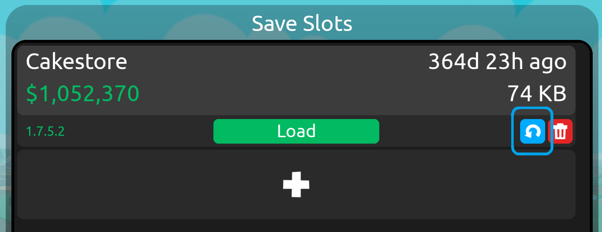
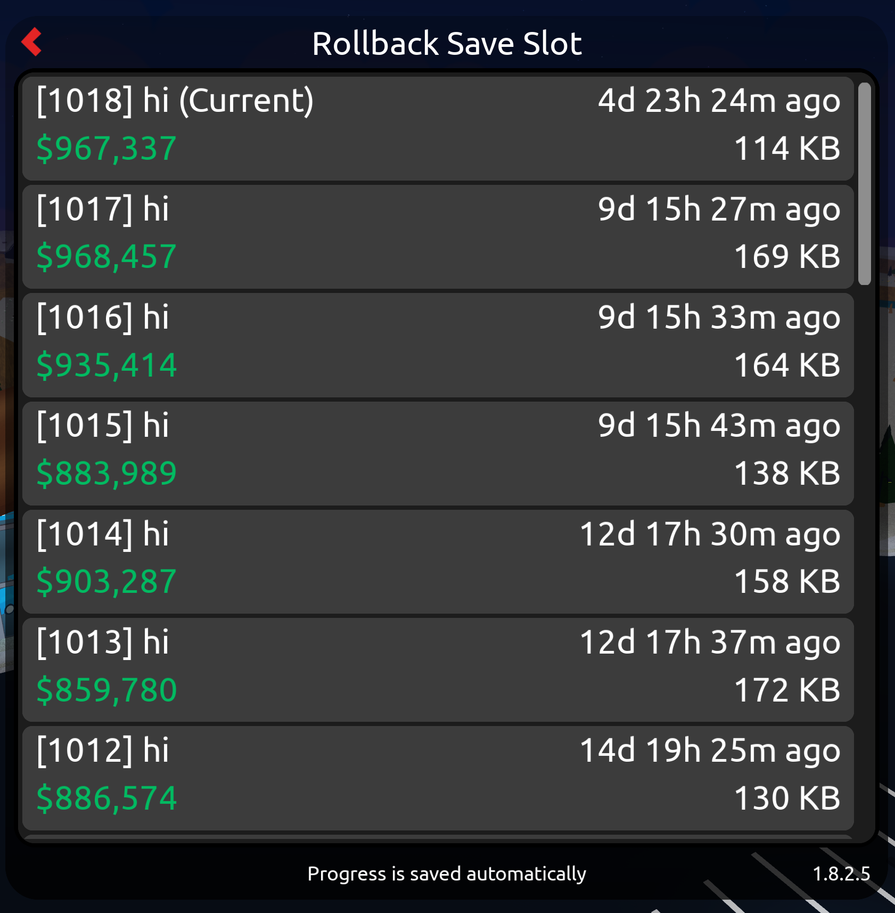

Rollback Feature
Function
Using the rollback feature you can load a previous version of your store. This can be useful if you made changes to your store that you don't like or if something went wrong.
How to use


When you join the game, you need to choose the store you want to try and rollback. Instead of pressing the "Load" button, press the blue "↶" button.
This will open the rollback menu, where you can see the previous versions of your store. Here you can choose the save you want to load.
For concerns: Discord (@kwallentrein)
This is not an official site and can contain mistakes.